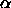
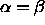
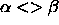

The first task of this function is to calculate the number of incoming links of a unit. Once this is accomplished, the range of possible weight-values will be determined. The range will be calculated with the

and parameters, which have to be provided with the help of
the init panel in field1 and field2.
If
parameters, which have to be provided with the help of
the init panel in field1 and field2.
If 
all weights and the bias will be set to the value of the parameter. If
parameter. If 
the links of all neurons will be initialized with random values selected from the interval and divided by the number of incoming links of every
neuron. The bias will also be set to zero.
and divided by the number of incoming links of every
neuron. The bias will also be set to zero.